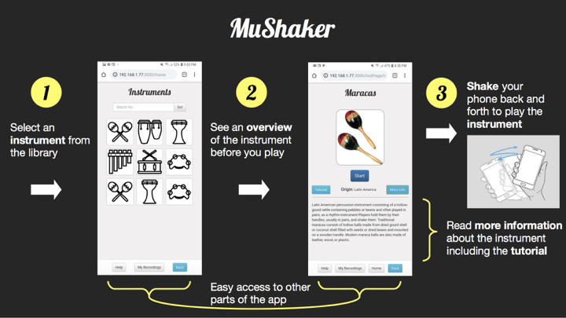
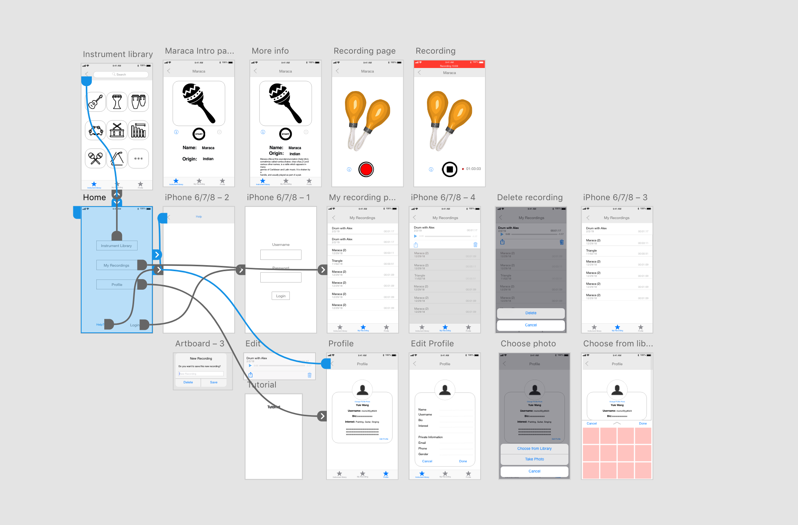
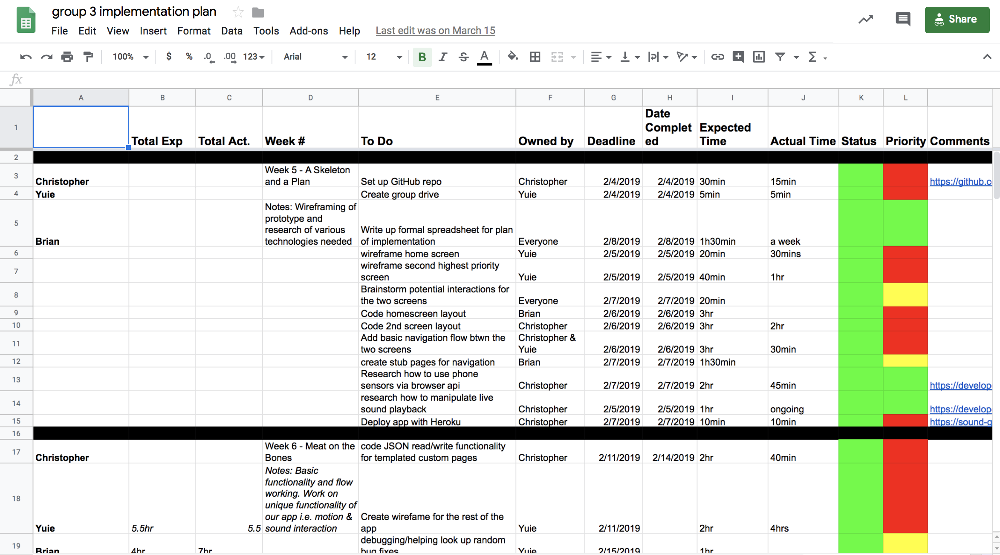
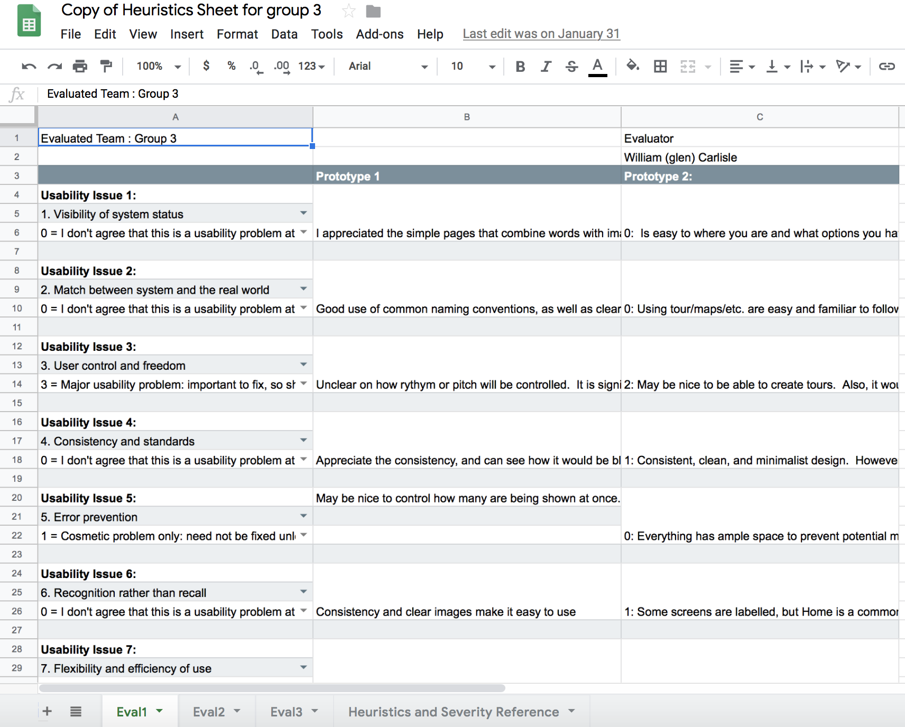

Yuie Wang
PORTFOLIO
MuShaker
What if your phone could be a maraca, a snare drum, a triangle, or some other percussion instrument with the touch of your finger and the shake of your wrist? MuShaker turns your phone into a multifaceted percussion instrument that replicates the experience of playing the real thing by tapping into your phone's sensors. There are plenty of drum machines and synthesizers out there but none of them allow the user to play by shaking their phone back and forth. Now with MuShaker musicians have a whole percussion instrument library at their fingertips.
Brand name: Mushaker We are too absorbed in the digital world and need to interact more with the physical world. We intend to make an APP for people who are interested in testing the sound of various music instruments. When you shake your phone, you can hear the sound of that music instrument Most of the music APPs need users to look at the screen, but our APP requires people to interact with the physical world through motion detection which helps making music on phone more realistic and fun.
Digital wireware designed in AdobeXD
Team Implementation Plan
We ussed various user tesing methods like interview, oberservation, A/B test, Heuristic Evaluation, and etc.
A/B test using Google Analystic
Heuristic Evaluation
Poster for Brand Marketing